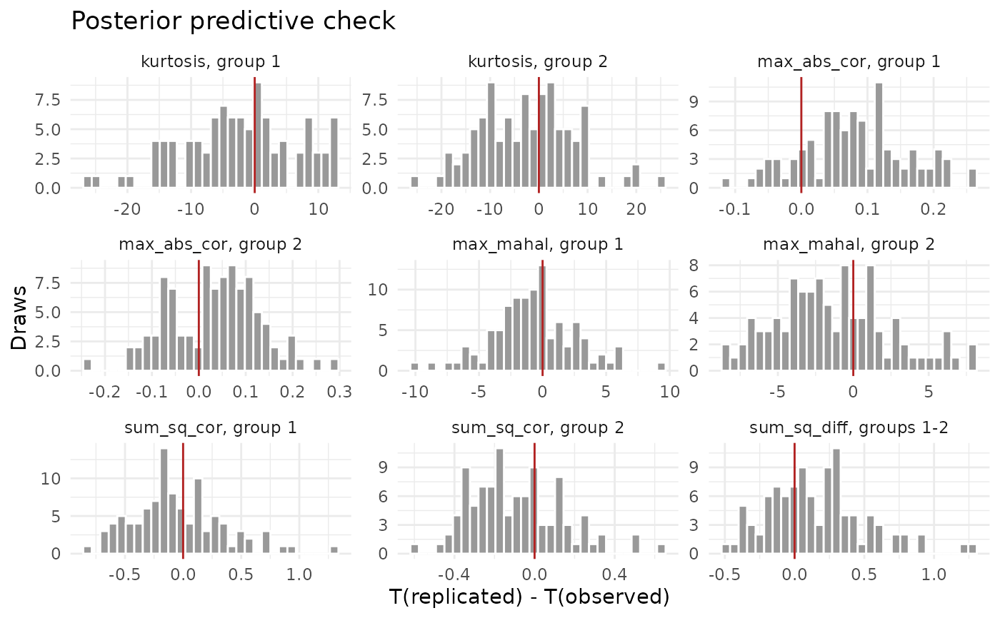

Checks whether the fitted model reproduces features of the observed data.
For each of ndraws posterior draws of the precision matrices,
replicate data with the observed group sizes are drawn from the model, and
discrepancy statistics of the replicate data are compared with those of
the observed data. A posterior predictive p-value (ppp) near 0 or 1 marks
a feature of the data the model does not reproduce.
Arguments
- fit
A
multiggm_fitormultiggm_fit_list(G-Wishart, SSVS or mGHS).- data_list
The list of data matrices the model was fitted to. They are column-centered as in
multiggm_mcmc().- ndraws
Number of posterior draws to use, spread evenly over the saved draws of all chains. Default 200.
- use
"draws"(default) uses saved precision draws, so the fit needssave_draws = TRUE(withthinto keep it small)."mean"replicates every dataset from the posterior mean precision matrices, for fits without draws. It ignores posterior uncertainty, so its p-values are more extreme than true posterior predictive p-values; treat it as approximate.- edge_stat
Edge-level statistic:
"pcor"(sample partial correlation; needs \(n_k > p + 1\)),"cor"(sample correlation), or"auto"(default:"pcor"when every group allows it).- alpha
Two-sided level used to count flagged edges in the printed summary. Default 0.05.
- chain
NULL(default) pools all chains.- seed
Optional seed for the replicate data (sets R's global RNG).
Value
An object of class "multiggm_ppc": a list with
globalData frame:
type("group"or"pair"),group1,group2,statistic,observed(averaged over draws for the realized statistics),rep_mean,ppp.edgesData frame:
type,group1,group2,i,j,observed,rep_mean,rep_sd,z((observed - rep_mean) / rep_sd),pppandp_two(2 min(ppp, 1 - ppp)).drawsData frame of observed and replicated global statistics per draw, for
plot_ppc().n_draws,use,edge_stat,alphaSettings.
Details
Statistics, with ppp = \(P(T(y^{rep}) \ge T(y) \mid y)\):
max_abs_cor,sum_sq_corPer group: the largest absolute sample correlation and the sum of squared sample correlations (overall strength of dependence). A ppp near 1 for
sum_sq_cormeans the model implies more dependence than observed, near 0 less (for example from over-shrinkage).max_mahal,kurtosisPer group, realized discrepancies computed with the same precision draw for observed and replicate data: the largest squared Mahalanobis distance \(y_i' \Omega y_i\) (outliers) and their mean square, Mardia's multivariate kurtosis (heavy tails). A ppp near 0 means the data have more extreme observations or heavier tails than a Gaussian model produces.
sum_sq_diffPer pair of groups: the sum over edges of the squared difference in the edge statistic between the groups. A ppp near 0 means the observed groups differ more than the fitted model implies (differences are over-shrunk); near 1, less.
Per edge, the same comparison is made for the edge statistic in each group
and for its difference between each pair of groups (edges).
Posterior predictive p-values are not uniform under a correct model: they
concentrate around 0.5, so a correct model flags fewer edges than
alpha would suggest. Many flagged edges, or extreme global ppp
values, are evidence of misfit; few flags do not prove fit.
References
Gelman, A., Meng, X.-L. & Stern, H. (1996). Posterior predictive assessment of model fitness via realized discrepancies. Statistica Sinica, 6(4), 733-760.
Examples
sim <- simulate_multiggm(K = 2, p = 6, n = 80, seed = 1)
fit <- multiggm_mcmc(data_list = sim$data_list, method = "ssvs",
burnin = 200, nsave = 200, seed = 1)
pc <- posterior_predictive_check(fit, sim$data_list, ndraws = 100, seed = 1)
pc
#> <multiggm_ppc> 100 posterior draws | edge statistic: pcor
#>
#> type group1 group2 statistic observed rep_mean ppp
#> group 1 NA max_abs_cor 0.460 0.542 0.83
#> group 1 NA sum_sq_cor 1.180 1.130 0.38
#> group 1 NA max_mahal 17.500 16.800 0.37
#> group 1 NA kurtosis 48.600 46.300 0.40
#> group 2 NA max_abs_cor 0.461 0.494 0.68
#> group 2 NA sum_sq_cor 0.757 0.666 0.29
#> group 2 NA max_mahal 18.800 17.400 0.35
#> group 2 NA kurtosis 51.100 48.500 0.42
#> pair 1 2 sum_sq_diff 0.962 1.120 0.64
#>
#> Edges with two-sided ppp < 0.05:
#> set flagged edges
#> group 1 0 15
#> group 2 0 15
#> pair 1-2 0 15
#> (ppp values concentrate near 0.5 under a correct model, so expect fewer than alpha x edges.)
plot_ppc(pc)
